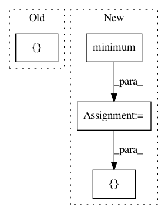

58ace0a10f2859a7bfbb9b56238ba47e4175f5ac,onnx_tf/handlers/backend/min.py,Min,_common,#Any#Any#,17
Before Change
@classmethod
def _common(cls, node, **kwargs):
values = [kwargs["tensor_dict"][inp] for inp in node.inputs]
return [
cls.make_tensor_from_onnx_node(
node, inputs=[tf.stack(values)], **kwargs)
]
@classmethod
def version_1(cls, node, **kwargs):
return cls._common(node, **kwargs)
After Change
values = [tf.cast(v, cls.cast_map[dtype]) for v in values]
result = values[0]
for i in range(1, len(values)):
result = tf.minimum(result, values[i])
return [tf.cast(result, dtype) if dtype in cls.cast_map else result]
@classmethod
def version_1(cls, node, **kwargs):
return cls._common(node, **kwargs)
In pattern: SUPERPATTERN
Frequency: 3
Non-data size: 4
Instances
Project Name: onnx/onnx-tensorflow
Commit Name: 58ace0a10f2859a7bfbb9b56238ba47e4175f5ac
Time: 2020-10-09
Author: wtsang@us.ibm.com
File Name: onnx_tf/handlers/backend/min.py
Class Name: Min
Method Name: _common
Project Name: biolab/orange3
Commit Name: 30f7e8327c8ff9ce129b4dce42b79ba5969afe23
Time: 2016-07-22
Author: tankovesna@hotmail.com
File Name: Orange/widgets/classify/tests/test_owadaboostclassification.py
Class Name: TestOWAdaBoostClassification
Method Name: setUp
Project Name: tensorflow/agents
Commit Name: 3f94bc83bf29a7edf887f48f1ece6dc4306d439e
Time: 2020-06-04
Author: bartok@google.com
File Name: tf_agents/bandits/environments/stationary_stochastic_per_arm_py_environment.py
Class Name: StationaryStochasticPerArmPyEnvironment
Method Name: _observe